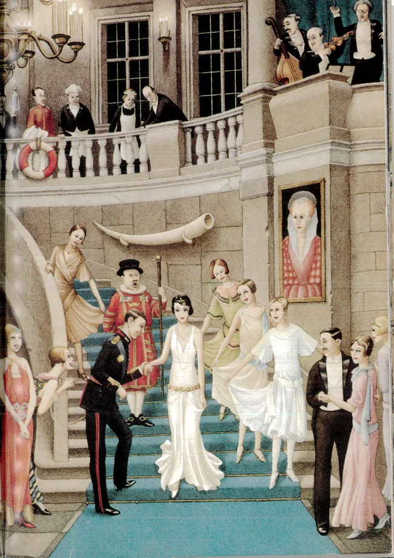
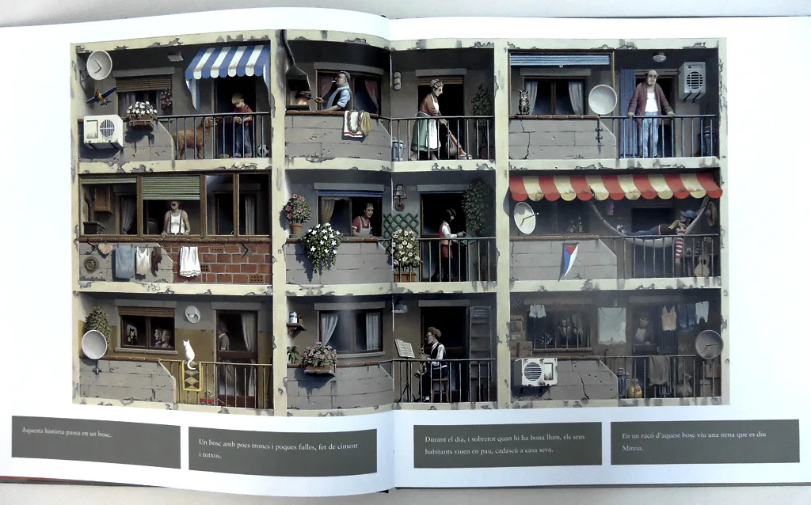
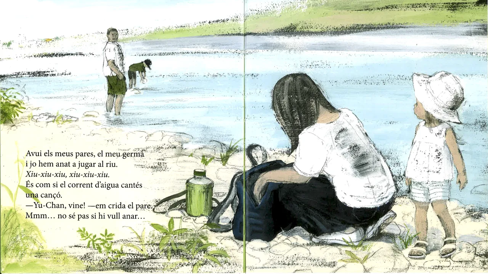
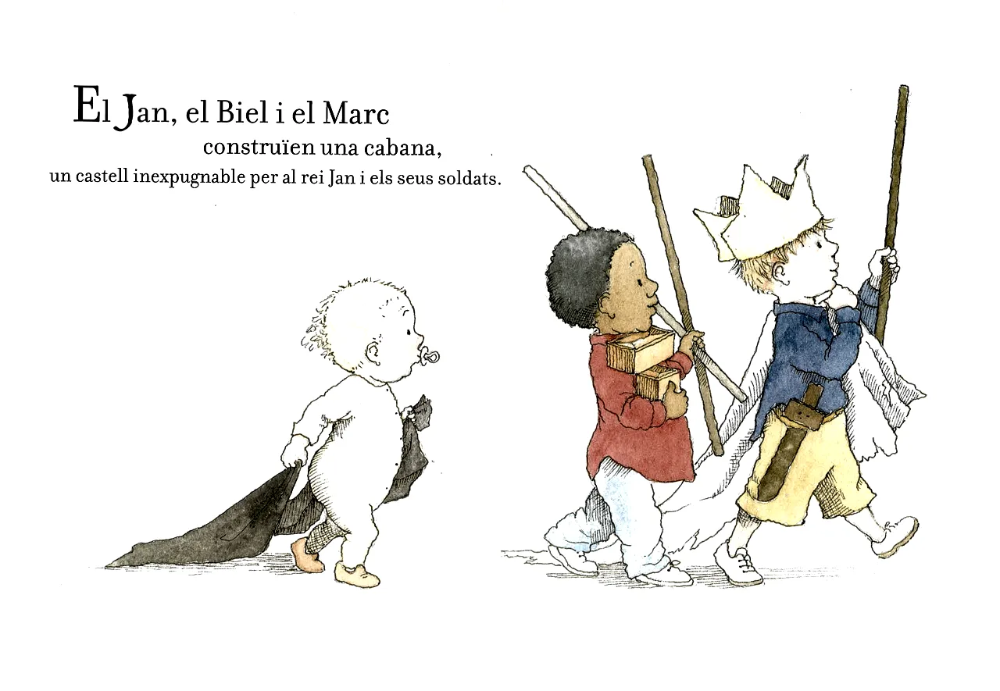
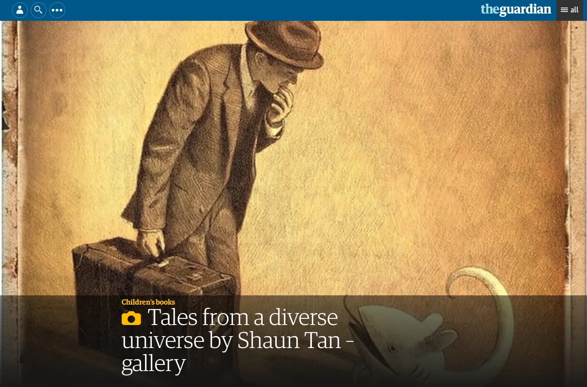

Pas 5. La qualitat de la imatge
Els àlbums il·lustrats poden ser creats per una mateixa persona que elabora el text i les il·lustracions o bé en col·laboració entre dos professionals, un que escriu la història i un altre que crea les imatges.
Per què l’il·lustrador decideix dibuixar una cosa i no una altra? Per què adopta un estil concret?
Mira’t aquest vídeo en què les il·lustradores Carme Solé Vendrell i Roser Capdevila conversen sobre el seu procés de treball:
Com pots aprendre a mirar i a interpretar les il·lustracions en els llibres infantils?
Els il·lustradors poden prioritzar diferents vies de comunicació amb els seus lectors. Les més utilitzades són la documental, l'afectiva i l'enginyosa (extret de Duran, 2007):
Documental
Ofereix testimoni d’una realitat que, si no va passar, podria haver succeït tal com es mostra a l’àlbum. Té la intenció d’apropar-se a la fotografia i sol narrar ficcions molt realistes i, sovint, de caire històric. Un exponent d’aquest tipus d’imatges és l’il·lustrador Roberto Innoccenti. Mira dos dels seus àlbums:

Perrault, C.; Innocenti, R. (il.). Cenicienta. Madrid: SM, 2012.

Frisch, A.; Innocenti, R. (il.). La niña de rojo. Sevilla: Kalandraka, 2013.
Afectiva
Busca l’empatia i la tendresa del lector a través de colors suaus, formes arrodonides i altres recursos que s’associen al món protegit de la infantesa.

Kato, Y.; Sakai, K. (il). Al prat. Sant Joan Despí: Corimbo, 2013.

Bently, P.; Oxenbury, H. (il.). El rei Jan i el drac. Barcelona: Joventut, 2011.
Enginyosa
Busca desafiar intel·lectualment el lector a través de jocs de complicitat o descobriment. Fa que el lector se sorprengui, s’adoni de detalls que contradiuen altres aspectes, hagi d’esforçar-se a interpretar ambigüitats, etc. Molt sovint va associada a l’humor.
Observa amb atenció les imatges següents per entendre aquest tipus de reptes:
Rattman, P. Buenas noches, Gorila. Caracas: Ekaré, 2001. Font: Ediciones Ekaré
Aprofundeix-hi
T’interessa si et dediques o vols dedicar-te al món de la docència o si vols ampliar-ne la informació.
Duran, T. Àlbums i altres lectures. Anàlisi dels llibres per a infants (p.87-101). Barcelona: Associació de Mestres Rosa Sensat, 2007.
Si pensem en altres elements compositius de la imatge, trobem que podem triar àlbums il·lustrats atenent els diferents recursos per il·lustrar. Una aquarel·la pot produir un efecte oníric o poètic per la seva aparença translúcida; una il·lustració feta amb llapis pot marcar el realisme a través de les ombres o una feta amb ploma tendeix a marcar molt els detalls.
Ves passant aquestes imatges i observa les sensacions que et produeixen aquests exemples d’il·lustracions fetes amb diferents tècniques:
Tenir en compte la diversitat visual que trobem als àlbums ens pot ajudar a enriquir l’experiència lectora dels infants. Si els oferim un tastet de diversos tipus d’il·lustració podran contrastar i anar adquirint criteris valoratius per la simple exposició a diferents tipus de productes.
Acabem de veure imatges que representen estils, recursos i tècniques d’il·lustrar molt diverses i contrastables per tal que el ventall de representacions sigui ampli. Si la tècnica il·lustrativa és un aspecte que t’interessa, la il·lustradora Rebecca Dautremer n'és una referència. Vols veure un vídeo que mostra en un minut com treballa una il·lustració grans dimensions? Fes clic a l'enllaç següent: Une toute petite seconde.
I també et pot interessar aquesta pàgina on l’autor i il·lustrador Shaun Tan comenta les imatges de dos dels seus llibres, Emigrantes i Los conejos.

Tales from a diverse universe by Shaun Tan – gallery. Font: The Guardian
T’has quedat encuriosit per llegir àlbums d’aquests autors-il·lustradors? Pots trobar totes les seves obres en qualsevol biblioteca pública. No dubtis a llegir-les.